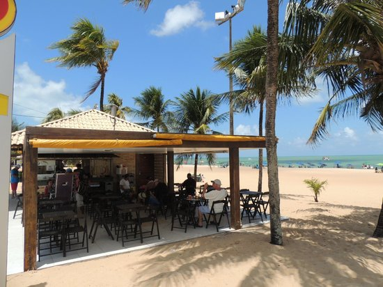
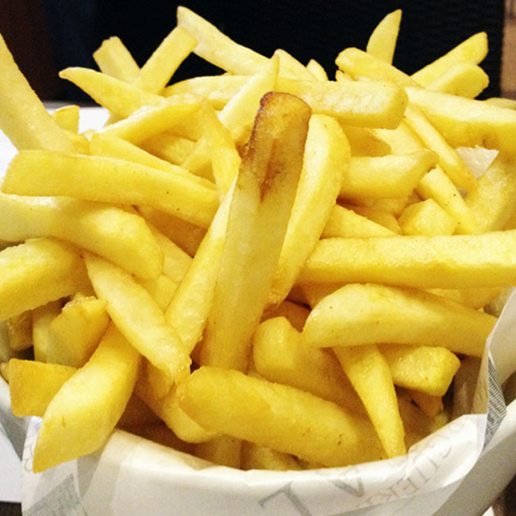

<ion-header>
  <ion-toolbar>
    <ion-title>QUIOSQUE 1</ion-title>
  </ion-toolbar>
</ion-header>

<ion-content>
  <ion-card>
      
      <ion-card-header>
        <ion-card-subtitle>Petiscos de Praia</ion-card-subtitle>
        <ion-card-title>{{nome}}</ion-card-title>
      </ion-card-header>
      <ion-card-content>
        Comidas de praia tradicionais, com o doce sabor da brisa do mar, acompanhado da sua bebida favorita.
      </ion-card-content>
  </ion-card>
  <ion-item style="margin-bottom:10px">
      <ion-icon name="search" item-left></ion-icon><ion-input type="search" placeholder="Pratos" class="pesquisa"></ion-input>
  </ion-item>
  <ion-item (click)="alerta()" class="item">
    <ion-avatar slot="start">
      
    </ion-avatar>
    <div class="detalhes">
      <ion-label text-wrap class="produto">Batata-Frita</ion-label>
      <ion-label text-wrap class="ingredientes" style = "color: gray !important;">Batata e Sal</ion-label>
    </div>
    <div class="compra">
      <ion-label class="preco">R$ 12,00</ion-label>
    </div>
  </ion-item>

  <ion-fab vertical="bottom" horizontal="end" slot="fixed">
      <ion-fab-button [routerLink]="['/carrinho']">
        <ion-icon name="cart"></ion-icon>
      </ion-fab-button>
    </ion-fab>

</ion-content>